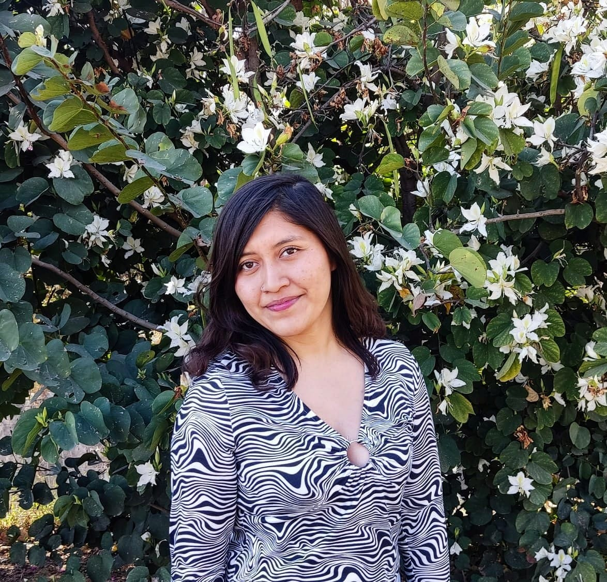
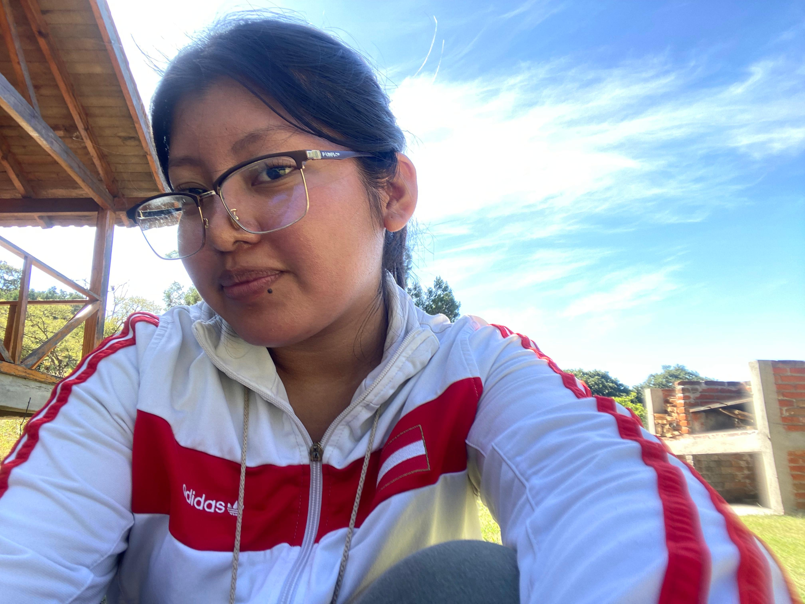

Diana Manzano Vásquez
Se encuentra realizando la tesis licenciatura titulada Variación intrainflorescencia en caracteres reproductivos de Agave kerchovei Lem. (Asparagaceae) en Zapotitlán Salinas, Puebla.
A través de este proyecto busca determinar si existe variación intrainflorescencia
de los caracteres reproductivos de la planta quiropterofílica Agave kerchovei. Para ello, en estructuras reproductivas producidas en distintas zonas de la infloresencia, evaluará la variación en caracteres reproductivos femeninos (dimensiones del ovario, número y tamaño de óvulos), y masculinos (número y dimensiones de las anteras, tamaño y viabilidad de los granos de polen), así como en caracteres de atracción floral (longitud de la flor, dimensiones de los pétalos, diámetro de la corola). Además, evaluará la variación en el sistema reproductivo y en el éxito reproductivo. Este estudio contribuirá a la comprensión de la biología reproductiva de la especie y las posibles implicaciones funcionales y ecológicas de la variación intrainflorescencia.

Carmen Viviana Peláez Palacios
Se encuentra actualmente realizando su tesis.
Su trabajo de tesis se enfoca en determinar la diversidad, composición y distribución vertical de epífitas vasculares asociadas a un encino nativo y a un eucalipto (especie exótica) en el Parque Estatal Flor del Bosque, Puebla. Las epífitas vasculares son plantas que se desarrollan sobre un hospedero denominado forofito. La diversidad de epífitas asociadas a los forofitos puede estar determinada por la historia evolutiva compartida entre ellos; es decir, el periodo de tiempo por el que han coexistido especies de árboles y de epífitas en un ecosistema determinado. Hoy en día, la introducción de especies es muy frecuente, por lo que especies exóticas como los eucaliptos se encuentran coexistinendo con forofitos nativos y plantas epíftitas en hábitats naturales. Sin embargo, el tiempo de coexistencia de las plantas epífitas con cada tipo de forofito (exótico y nativo) no es el mismo; por lo que se espera que la diversidad y distribución vertical de epífitas vasculares difieran entre los dos tipos de forofitos.

Farhat Magnolia Abriz Morales
Se encuentra actualmente realizando su tesis.
En su proyecto pretende comparar la estructura (riqueza, abundancia, diversidad, dominancia y composición) y la distribución vertical de las comunidades de epífitas vasculares asociadas a dos especies de encinos (Quercus rugosa y Quercus obtusata) que producen cantidades contrastantes de aleloquímicos. Además, para establecer los efectos de la producción de aleloquímicos propia sobre el establecimiento
de las epífitas vasculares, determinará el reclutamiento de plántulas de la familia Bromeliaceae. Las epífitas vasculares son parte importante de la diversidad de los bosques, pues son un elemento importante en procesos biogeoquímicos como el ciclado de nutrientes; además, proveen de refugio y alimento a un importante número de animales.